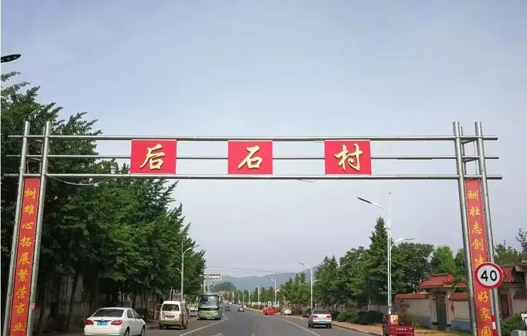

大魏家后石村位于大连市金州区的西部，临近大海，翻过西边的山头就能看到海岸线。这个平静的村庄是抗美援朝烈士王福清的家乡，村子的中央有一座公园，被命名为福清公园，公园入口不远处就是王福清烈士的塑像。
王福清烈士的塑像由汉白玉雕刻而成，烈士身穿棉军装，手把方向盘，目光坚定地望向前方。塑像的底座有近一人高，上面贴着黑色的花岗岩石板，前面是著名作家魏巍的题词：“无私奉献的光荣战士王福清烈士纪念碑—一九八九年夏”，后面是烈士生平。
王福清是后石村小王家屯人。小学毕业后曾学习汽车维修技术，后成为汽车司机，负责运输工作。1950年10月，王福清响应祖国“抗美援朝，保家卫国”的号召，志愿奔赴朝鲜战场参加运输工作。翌年8月，他参加中国人民志愿军，担任白山汽车团后勤部驾驶员、汽车班长。14日，他在执行任务中负伤，随即被送往医院，伤未痊愈就坚决要求出院，经医生同意，带药返回岗位。
战争中，他机智果敢、奋不顾身，冒着枪林弹雨将作战物资和弹药及时运输到前线，安全行车3.3万公里，他开的汽车被誉为“夜夜飞”。王福清带领的汽车班20余辆汽车一个季度能节约汽油10多吨，他还帮助战友和朝鲜兄弟部队修理汽车20余辆次。1951年10月31日，王福清在带领车队执行运输任务途中遭遇美军飞机轰炸，为保护部队首长和战友及10余辆汽车物资弹药安全，王福清迅速将车队隐蔽好，自己却不顾安危，驾空车将敌机引开，不幸中弹阵亡，时年29岁。
王福清牺牲后，部队党委根据他的生前愿望，追认他为中国共产党正式党员，并授予特等功臣称号。
为纪念王福清的英勇事迹，教育激励后人，后石村于1989年9月建纪念公园，命名为福清公园，占地面积3万多平方米。随着村集体经济不断发展壮大，后石村“两委”干部和村民不忘王福清烈士的英雄事迹，多年来将纪念公园逐年投资改善，从基础设施、绿化美化、优化环境等方面进行升级改造，先后平整公园地面20亩，铺设方砖3000多平方米，植树400多棵。
 ← 返回大连地图